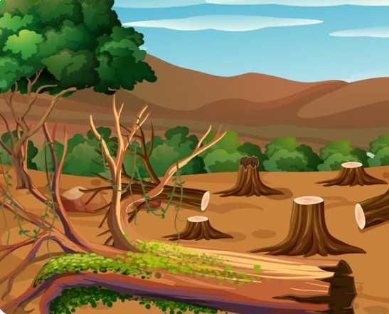
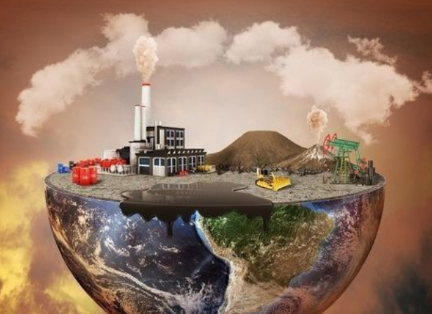
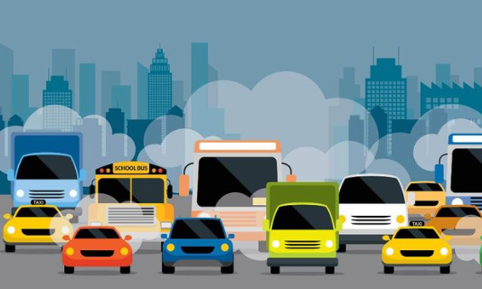
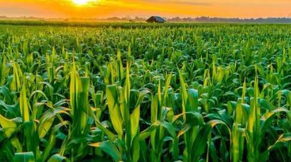

Overview
Climate change is a big, lasting shift in our planet's weather patterns, making things hotter and rainfall unpredictable. This is mainly because humans release too many heat-trapping gases. For Fiji's farmers, this means struggles with crops due to more droughts, too much rain, or new pests, making it harder to grow enough food.
Causes of Climate Change
Climate change is happening because of human actions like cutting down forests, burning oil and coal for power and travel, and certain farming practices, all of which release too many heat-trapping gases into our air.
Deforestation
When deforestation occurs majority of carbon stored by trees is released back into the atmosphere as carbon dioxide, which contributes to Climate Changes
Burning Fossil Fuel
When we burn fossil fuels like, they release gases that act like a blanket around the Earth, trapping heat from the sun. Because of this extra heat, the Earth is getting warmer and weather patterns are changing.
Transportation
Transportation in Fiji, like cars, buses, and boats, largely runs on fuel from oil. Burning this fuel releases a lot of carbon dioxide, adding heat-trapping gases to our air and changing our climate.
Agriculture
Agriculture in Fiji contributes to climate change mainly through practices like clearing land for new farms, which releases carbon from cut trees and disturbed soil. Also, livestock like cattle produce methane gas, and certain fertilizers release nitrous oxide, both adding to the heat-trapping gases in our atmosphere
Effects on Crops
Climate change is now making our beloved Fiji's soil and sky unpredictable, meaning our traditional root crops like dalo and cassava face new struggles from heat, floods, or pests, threatening the food on our tables and our way of life.
Drought
Climate change makes droughts worse because a hotter Earth causes more water to evaporate from the land and sea, and it changes where and when the rain falls. For farmers in Fiji, this means the ground gets very dry, and crops like sugarcane or root crops don't get enough water to grow well, leading to smaller harvests or even crop failure
Pest & Diseses
Increase in pests and diseases Climate change causes more pests and diseases because warmer temperatures and changing rain patterns help bugs and sicknesses survive better and spread faster. In Fiji, this means new or more damaging pests can attack crops like taro or cassava, weakening the plants and making it harder for farmers to get a good harvest.
Crop Yeild
Climate change directly causes reduced crop yields because extreme heat, longer droughts, too much rain (floods), and new pests all stress the plants. In Fiji, this means crops like dalo or vegetables don't grow as big or healthy, so farmers end up with less to sell and less food for their families.
Food insecurity & Economic losses
When climate change makes our weather wilder – with more droughts, floods, and pests – our farms produce less food. For Fiji, this means food insecurity because there isn't enough taro, cassava, or vegetables to go around, or prices go up so people can't afford it. This then leads to economic losses as farmers earn less, and the country loses money from reduced exports and damaged lands.